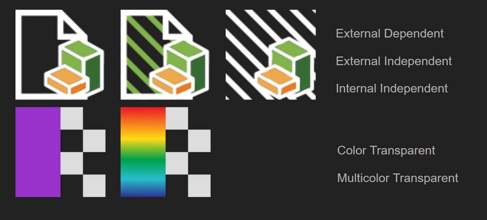

ANSYS DISCOVERY
Main Quest
objective
Provide an intuitive product experience to newer users
description
A summer internship experience working as a UX intern on engineering simulation software. Their newest product, ANSYS Discovery, was aimed at more entry level engineers and wanted to allow them to both design and quickly test all in one product. Allowing them to more efficiently work on design iterations. My time was spent mostly working on wrapping up features for an upcoming alpha release.
party size
11 members
Duration
3 months
Role
UX Intern
Rewards
6,000 xp
+4 Interface design
+1 After Effects
+5 Illustrator
+2 UX evaluations
+1 Onboarding
+2 T-shirt design
Life of a ux intern at ansys
I spent my summer working in the Evanston, IL branch office with one other intern, our manager, and a senior UX designer. The UX team was comprised of 11 full-time employees working as a distributed team. We often made use of digital tools to collaborate remotely with the teammates not located within our office. Being the only two interns in the small office, me and the other intern often worked very closely together on our assignments. We would have weekly meetings as a team to go over what we worked on that week and what we needed help with going forward. The two senior UX designers on the team provided us with a lot of assistance and mentorship. The mockup designs we often created were approved by either my manager or the UX director. Depending on the feature we would also be looped in with the UX engineer to get technical feedback for feasibility on our design solutions.
Projects overview
During the time of my internship the product was being prepared for an alpha release in a tech preview that was just a couple of months away. This heavily influenced the kind of tasks I got to work on. Most of it was focused on wrapping up current features. My introductory work started out with creating new or improving existing icons. It was a good starting point to get familiar with the product and it's functions.
Icons
We got tasked with creating icons that would show up in the Model Tree. For the top set we had to create a scheme for background elements that would communicate different file states. The bottom set was related to colors of objects within the model. 16x16 Final icon size.
You can never forget the best UX tool! Before any digital icons were made in Illustrator, I took to the whiteboard and created plenty of sketches to quickly iterate on ideas. Throughout my entire design process the whiteboard is always an important starting point when starting on a fresh idea.
Onboarding
Early on I also worked on creating animations for videos that would be included in preliminary onboarding materials. Here I got to learn the basics of After Effects while annotating video footage of how to use various functions within the product. If there was more time and resources I would have wanted to explore different layout options here. What would this screen look like if the instructions were outside the video instead of within?
Overlay Help
When I heard my coworkers talking about the Overlay Help feature it really captured my interest and I felt strongly about seeing it improve. Overlay help is a neat feature with a unique interaction that provides a user with step by step guidance while still providing a window to interact with their project and make changes live.
I helped create a set of clearer navigation icons and improved their discoverability. The first iteration of icons was a set of directional arrows. In my iteration I tried to conceptualize their function by using nodes to represent moving up to a parent topic or down to a child topic.
And before we got here there were many iterations done.
When handing off interaction designs to the UX developer I would make sure to document the different states to clearly communicate the design intentions.
I created some mockups to help better organize the information found within the Overlay Help. What started as a side project to explore the problem space, eventually turned into an opportunity to open a discussion about it. Initially the overlay help only had sections of texts that would responsively adapt, which I found hard to scan and quickly process which element of information had what I was looking for. This led me to create a mockup that included clearly labeled titles, attention brought over to steps and links, and changing the font to be more legible.
After considering feedback from UX evaluations, discussing with the documentation team, and bring up concerns with the UX director, I was able to find a time to share my initial idea and work towards getting parts of it approved. Parts of it were well received and implemented while some stayed disputed. The script font stayed as a way to distinguish help text from interactable interface text. Here I am glad that I was able to help make some improvements to the feature even when without the entire suggestion getting approved. Here I think it's important to make a case for the users, hear out the other side and take the little victories when you can.
UX evaluations
Speaking of UX evaluations, I was also able to get involved and work closely with the team's UX researcher to help observe and take notes during a round of evaluations. Afterwards the other intern and I helped compile and analyze the findings into a final report and presentation that we later shared with stakeholders within the company. It was an interesting experience learning how to conduct UX evaluations remotely using WebEx and the type of preparation that goes into running these tests.
Engineering insights
Towards the end of the internship we had more choices of what we wanted to make our last project. I was really interested in helping with Engineering Insights where the results of simulation tests are presented at various information granularities. The main focus was figuring out a way to present the data visualization and interaction flow. I spent time in Adobe XD creating prototypes of the different interactions between granularities. You can check out a quick mockup of the design here.
T-shirt Design
As a fun bonus side project, me and the other intern got involved in a t-shirt design process. We overheard our manager bring up that there were t-shirt design contests held for national intern day in the past and we wanted to learn if there would be one that summer. Our curiosity led us to contacting the university recruiter. There hasn't been a competition like that in a while but she did need a new t-shirt design and recruited us for some design help! I learned a lot about understanding and gathering design requirements, working in Illustrator, and gathering feedback. I had a lot of fun getting to be more creative and exploring ideas that would appeal to other college students. You can see us wearing the final design in the group photo at the beginning of this page!